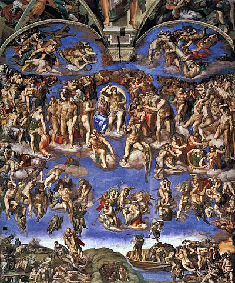

Il terzo giorno della nostra gita a roma siamo andati a visitare i musei vaticani.
Appena entrati abbiamo fatto alcuni controlli dove abbiamo fatto passare i nostri zaini attraverso degli scanner mentre noi passavamo sotto a dei metal detector.
Entrati nei musei ci è stata data una radiolina con connesso un auroicolare, questa era sintonizzata sul canale in cui la nostra guida stava parlando perciò siamo stati in grado di comprendere tutto nonostante la grande folla che c'era quel giorno ai musei vaticani
Ci siamo sedutti tutti davanti ad un monitor su cui era visualizzata una presentazione che la guida usava come accompagnamento per spiegarci un po' la storia delle cose che saremmo andati a vedere. Dopo circa una mezz'ora ci siamo alzati e abbiamo iniziato a vedere con i nostri occhi
tutte le opere di cui prima ci aveva parlato. qui di seguito sono riportate quelle che ci hanno colpito di più e le più importanti.
Le stanze di raffaello
Nella prima parte della nostro tour abbiamo visitato le stanze di Raffaello. Ogni stanza ha sulla parete un'immagine di Raffaello in tema con la stanza. La stanza inoltre è anche caratterizzata da un certo tondo che indica il tema della stanza.
La scuola di atene
Questa immagine si trova a Est e il tema della stanza è la filosofia. In questo quadro Raffaello Sanzio rappresenta Aristotele insieme ad alcuni suoi alivie, di particolare importanza notiamo Platone, insieme ad aristotele e Pitagora a sinistra che legge un grosso libro
Virtù e la legge
Questa immagine si trova a Sud e il suo tema è la giustizia. Nel quadro sono rappresentate le quattro virtù: fortezza, prudenza, temperanza e giustizia assistono a Triboniano che consegna le Pandette a Giustiniano in modo da celebrare il diritto naturale e civile.
Disputa del sacramento
Questa immagine si trova a Ovest e il tema della stenza è la teologia. In questo quadro Raffaello rappresente le due chiese: quella trionfante superiore: con Gesù, gli apostoli e diversi santi,
E la chiesa militante, composta da teologi, dottori della Chiesa e pontefici, ma anche filantropi, letterati e semplici fedeli anonimi, possiamo notare san Girolamo, Franceso della rovere e Dante
Pamaso
Questa immagine si trova a Nord e il tema della stanza è la poesia. In questo quadro è rappresentato il monte Parnaso, che secondo la mitologia greca è la dimora delle Muse. Sulla sommità del colle,
nei pressi della fonte Castalia, Apollo, coronato di alloro e al centro della composizione, suona una lira da braccio, circondato dalle Muse. Ai suoi lati si vedono Calliope ed Erato
i giardini vaticani

In seguito siamo usciti entrando momentanemante nei giardini vaticani. Questi sono stati da sempre il luogo di meditazione del papa, anche se ora fanno parte dei musei. una delle principali opere qui è La statua colossale venne trovata nel medioevo
presso le Terme di Agrippa e porta la firma di un certo Publio Cincio Savio. Probabilmente originariamente come decorazione per il vicino Tempio di Iside al Campo Marzio, dove doveva far parte di una fontana gettando acqua dalle punte. Il suo ritrovamento diede
il nome al rione Pigna, tuttora in uso. La parte "moderna" è la scalinata a doppia rampa progettata da Michelangelo.
Dopo aver percorso le sale siamo potuti entrare nella bellissima cappella sistina. anche se la gente era tanta e il tempo era limitato siamo riusciti ad ammirare le grandiosi opere al suo interno:
Il giudizio universale

La prima parte frontale, e anche la primi a essere vista, della cappela sistina contiene il giudizio universale Il Giudizio universale è un affresco di Michelangelo Buonarroti, realizzato il 1535 su commissione di papa Paolo III Farnese
per decorare la parete dietro l'altare della Cappella Sistina. Si tratta dell'evento dell'ultima venuta alla fine dei tempi del Cristo per inaugurare il Regno di Dio, nonché il più grande capolavoro dell'arte occidentale in generale.
Volta della cappella

La volta della cappella contiene un un grandioso ciclo di dipinti che completavano iconologicamente le Storie di Gesù e di Mosè realizzate da un team di pittori (tra cui Botticelli, Ghirlandaio e Perugino) nel 1481.
Michelangelo dipinse infatti sulla volta le storie dell'umanità "ante legem", cioè prima che Dio inviasse le Tavole della Legge a Mosè
La creazione di Adamo
Questo affresto, forse il più famoso tra questi, si trova al centro della volta e rappresenta la creazione di adamo da parte di dio. Quetsa è rappresentata dal toccarsi di Dio e Adamo
A seguito di questa visita ci siamo resi conto con grande tristezza che il nostro viaggio era giunto al termine, infatti dopo un pranzo veloce e un saluto a questa fantastica città ci siamo messi in pullman per tornare a casa.
Fine